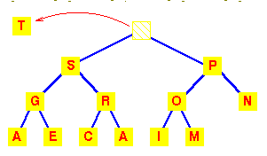
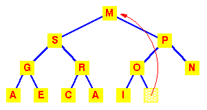
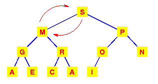
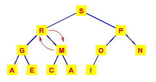
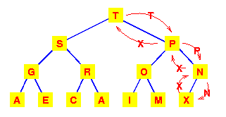
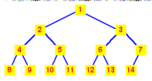
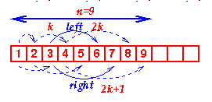

| Data Structures and Algorithms |
| 6.2 Heaps |
Heaps are based on the notion of a complete tree, for which we gave an informal definition earlier.
Formally:
A binary tree is completely full if it is of height, h, and has 2h+1-1 nodes.
| Let's start with this heap.
A deletion will remove the T |
 |
|
To work out how we're going to maintain the heap property,
use the fact that a complete tree is filled from the left.
So that the position which must become empty is the one
occupied by the M.
Put it in the vacant root position. |
 |
|
This has violated the condition that the
root must be greater than each of its
children.
So interchange the M with the larger of its children.
|
 |
|
The left subtree has now lost the
heap property.
So again interchange the M with the larger of its children.
|
 |
We need to make at most h interchanges of a root of a subtree with one of its children to fully restore the heap property. Thus deletion from a heap is O(h) or O(logn).
|
To add an item to a heap, we follow the reverse
procedure.
Place it in the next leaf position and move it up. Again, we require O(h) or O(logn) exchanges. |
 |
|  |
If we number the nodes from 1 at the root and
place:
Then the 'fill from the left' nature of the complete tree ensures that the heap can be stored in consecutive locations in an array. |
| Viewed as an array, we can see that the nth node is always in index position n. |  |
The code for extracting the highest priority item from a heap is, naturally, recursive. Once we've extracted the root (highest priority) item and swapped the last item into its place, we simply call MoveDown recursively until we get to the bottom of the tree.
Click here to load heap_delete.c
Note the macros LEFT and RIGHT which simply encode the relation between the index of a node and its left and right children. Similarly the EMPTY macro encodes the rule for determining whether a sub-tree is empty or not.
Inserting into a heap follows a similar strategy, except that we use a MoveUp function to move the newly added item to its correct place. (For the MoveUp function, a further macro which defines the PARENT of a node would normally be added.)
Heaps provide us with a method of sorting, known as heapsort. However, we will examine and analyse the simplest method of sorting first.
|
Priority Queue Animation This animation was written by Woi Ang. |
|
Please email comments to: morris@ee.uwa.edu.au |
Key terms |
|
| Continue on to Sorting | Back to the Table of Contents |